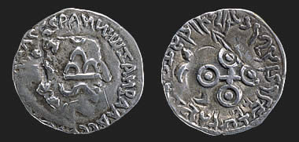

Silver coin
This is a silver coin from central India which was made in about the first century A.D. On the front it shows a portrait of a ruler surrounded by an inscription in Greek. On the back of the coin is an inscription in Brahmi script and a large symbol. This was the symbol for Ujjain which was the capital city of the Satavahanas. |